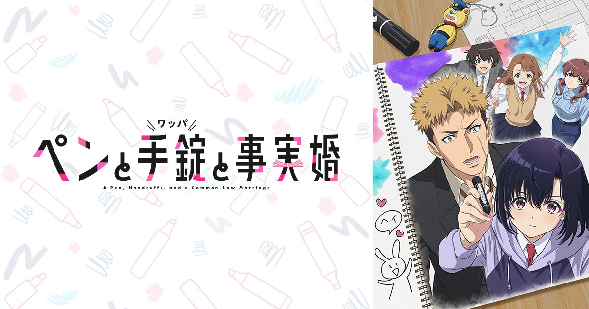

2026-11-20 · 新番前瞻 / 制作拆解

11 月 20 日，《笔与手铐与事实婚》（ペンと手錠と事実婚）一次性放出了一整轮消息： 主 PV、新主视觉、片头片尾曲、三位追加声优，以及定档—— 2027 年 1 月 9 日 25:00，TOKYO MX 与 BS11。 25:00 这个写法听着玄，其实就是 1 月 10 日凌晨 1 点，周六深夜档。
如果你只看标题，会以为这是部擦边喜剧：笔、手铐、事实婚，三个词摆在一起， 怎么看都像深夜档的老套路。原作也确实拿这个当钩子—— 四十岁的刑警 Eiji Kirisame 在案发现场遇到一个不说话的女高中生 Tsugumi Kuchinashi， 她的「证词」全画在一本速写本上，画得还很潦草； 而本子的最后一页写着：「你要不要跟我结婚？」
但真正让这部作品在动画化之后立得住的，不是这句告白。 是那个「不说话」。
这是这次改编最硬的一道题，也是绝大多数前瞻文章完全没碰的地方。 漫画里让一个角色不说话，成本是零——你只要不画台词气泡，读者自然会把空白脑补成「她在想事情」。 而动画里，一个不说话的角色的每一个镜头，都必须由声音去填满： 呼吸的节奏、笔尖划过纸面的摩擦、翻页时纸张的响声、书包落地的闷响、 以及最重要的——她什么时候选择不出声。
这就带来一个结构性的后果：这部番的音响监督（日文称「音響監督」）位置，比同类作品重得多。 原作里读者用眼睛读她的画，动画里观众要靠耳朵判断她的情绪。 素描本上的画是「看得见的证词」，而伴随作画出现的那些细碎声响，才是「听得见的性格」。 一集 24 分钟，如果她的沉默没有被设计过，观众会在第 8 分钟开始走神—— 这不是演出问题，是音轨问题。
本作音响监督是森下広人（《最果てのパラディン》《杖与剑的魔剑谭》）。 这两部作品的共同点是：战斗之外的对白间隙处理得相当讲究，安静的地方真的敢安静。 从履历看，这个选择是对的方向。
公布的两首歌里，片头曲是水濑祈的《未解決で、ロマンスで。》（词曲编：Aira， 2027 年 1 月 27 日由 King Records 发行单曲），片尾曲是 saeco 的《Message》。
水濑祈同时是女主角的声优。把这两件事放在一起，很多报道会写成「女主角唱歌，很甜」。 但它其实是一次非常清醒的设计决策：一个不说话的角色，需要一个开口的地方。 正片里她不能说话，那是设定；片头曲里她可以唱歌，那是补偿。 90 秒的 OP，是观众这一周里唯一能听到「Tsugumi 的声音」以完整句子形式出现的时刻。
水濑祈自己的说法也印证了这一点：她提到以前没接过「恋爱喜剧 × 推理」的类型， 希望歌里同时装下恋爱的暖意和查案的紧张。「同时装下」这四个字，就是这部作品的配方。 而 saeco 那边提到被「她比谁都更直接地传达心情，却一个字都不说」这件事打动—— 片尾曲的位置正好留给观众消化情绪，这个分工也很清楚。
制作是 EMT Squared，导演石山タカ明， 系列构成村越繁，人设中村深雪，音乐橋口佳奈。 把这份名单和作品类型对一下，会发现它的取向很清楚。
EMT Squared 常年做的是「预算不算宽裕但交付稳定」的中型作品， 它的长处从来不是作画爆发，而是把日常戏的节奏做顺。 石山タカ明执导过《Chaos;HEAd》《Fairy Musketeers》，两部都是「信息量大、需要靠演出把设定讲明白」的作品—— 而他近年做《Rinkai!》这类偏写实的题材，控制镜头的耐心是够的。
真正让我觉得选对的是系列构成村越繁。 《Zombie Land Saga》最难的地方不是搞笑，是让一群荒诞角色在一集之内完成情绪转折还不显得突兀； 《Snowball Earth》则是把慢节奏的悬念撑住了。 这两样本事，正好对应本作需要的两件事： 把刑警的僵硬和高中生的离谱做成喜剧，同时在案子收尾时把情绪压下来。
所以我的判断是：不要期待它有惊艳的打斗或作画回，要看它敢不敢在关键处停下来。 这类作品的分水岭，往往就是某一集女主一页一页翻速写本、全场只有纸声的那 40 秒。
数据上有一个细节值得单独拎出来。 2026 年 8 月动画化消息公布时，各家报道引用的发行量是40 万册； 到 11 月 20 日这轮公布，官方口径已经变成突破 50 万册。
三个月，净增十万册，而这段时间里漫画并没有完结、也没有大型联动。 增量几乎全部来自「动画化宣布」这一件事。 换句话说，这部作品现有的读者基础，有相当一部分是在看到「它要做成动画」之后才决定去读的—— 这批读者的期待值和追番习惯，跟原作老读者不一样，他们更在意「动画能不能把那个氛围做出来」。
附带两个日期：日文版第 7 卷已于 4 月 28 日发售，第 8 卷定在 12 月 25 日； 英文版由 Yen Press 代理（2025 年 8 月取得授权），第 2 卷 9 月 22 日已上市。 也就是说，动画开播时，日文版手上已经有 8 卷存量可改编， 按一季 12 集的常规容量，大概率会落在前 4 到 5 卷的区间—— 刚好够做完「她为什么沉默」这条主线的前半段，把答案留到可能的第二季。
2027 年 1 月被业内叫作「六十多部新番」的一个季度， 续作扎堆，B 站那边的导视视频播放量早早破了二十万。 在这种密度里，一部原创度不算高的漫改推理喜剧，排片位置其实很关键。
周六 25:00 是个双刃剑。好的一面：这个时间段的观众是「主动熬夜追番」的人， 他们能接受慢热、能接受一集只推进一个案子、也更能欣赏那种安静的演出； 坏的一面：它天然拿不到黄金时段的泛用户曝光， 第一集的「路人转化率」会明显低于周日傍晚档。
所以它真正的竞争对手，不是同季另一部推理番， 而是流媒体首页那个推荐位。 这决定了它的第一集必须在前 8 分钟里给出一个别人给不了的东西—— 而它手上最好的那张牌，不是告白，是「用一幅画破一个案」的那一下爽感。 如果第一集把素描推理做成「读者和刑警同时看懂」的瞬间，它就赢了； 如果只是把画当萌点展示，那它会被埋进那一季的六十部里。
我们的观察：这一轮宣传的排布很懂自己的卖点。 主视觉把女主放在最前面、笔正在纸上走，刑警在她侧后方看着—— 视线方向就是这部作品的关系结构：她在写，他在读。 而三位追加声优的角色配置，恰好把剧情的三种功能补齐了： 知道真相的后辈刑警（小林裕介，29 岁）、把女主当师父崇拜的学妹（诸星堇，16 岁）、 以及完全误会了两人关系、以为女主是刑警侄女的交通课巡查（雨宫天，26 岁，奈良出身）。 最后这一位是全剧最重要的喜剧阀门——她越晚知道真相，误会就越值钱。
我们的观点：标题是这部作品最大的资产，也是它最大的风险。 雨宫天自己在访谈里承认，看到「事实婚」三个字以为是很成人的故事， 结果发现主角是四十岁刑警和高中生，整部作品「荒唐得好笑」； 小林裕介则吐槽角色的姓氏他这辈子没见过。 这两句吐槽，其实已经把作品的真实气质说完了：它不是情色喜剧，是错位喜剧。 但风险也在这里——被标题劝退的人不会点开，被标题吸引进来的人可能第一集就发现「不够刺激」。 宣传上如果继续往「擦边」方向走，会拿到一波错误的初始观众，然后被他们打低分。
我们的案例对比：「不说话的角色」在动画里有过几种解法。 《古见同学有交流障碍症》用的是夸张演出 + 旁人解说， 把沉默变成喜剧节奏的一部分；《声之形》用的是听觉设计， 让观众通过声音的缺失去理解角色的世界； 而更接近本作内核的其实是物证叙事那一类—— 像《神探伽利略》那样，靠一个可被检验的物理细节推进推理。 差别在于：别人靠台词推动，这部靠画面推动。 如果动画真的把速写本当「证据链」来拍，而不是当可爱的道具， 它会成为这一类里相当特别的一部。
我们的实验：我们做了一次「声音预算」的推演：假设一集 24 分钟， 女主有对白的时长是 0 秒，那么她的存在感必须由另外三样东西承担—— 笔尖声（约占她出场镜头的三成）、呼吸与环境音（占四成）、旁人的反应（占三成）。 这意味着她的每一场戏，都需要比常规角色更长的镜头时间； 而一集只有 24 分钟，能分给「案子」的时间就被压缩了。 结论是：这部番大概率会采用「一集一案 + 一条长线」的结构， 短案保证节奏，长线（她为什么沉默、为什么提结婚）留作钩子。 如果第一集就想讲长线，24 分钟是不够的，会显得赶。
我们的评分理由：7.5 是「前瞻分」，评的是班底与设定的匹配度，不是成片质量。 加分项：「无声女主」这个设定在动画媒介里有天然的声音设计空间，而音响监督的人选方向正确； 让女主角的声优唱片头曲，把「设定上的沉默」和「商业上的开口」处理得很干净； 村越繁在群像喜剧与情绪转折上的履历，正好对上本作的两副面孔； 原作存量 8 卷，改编空间充足；发行量三个月净增十万册，说明动画化确实在拉新。 扣分项：EMT Squared 的产能决定了它不会是作画向作品，动作与追逐戏的上限有限； 深夜 25:00 档位在第一集拉新上处于劣势；标题的擦边感会带来一批错位的初始观众； 一季 12 集对「一集一案」的结构来说偏紧，容易在后半段赶进度。 一句话总结：这是一部把赌注押在「敢不敢安静」上的改编—— 它最大的看点不是告白，而是那 40 秒只有纸声的镜头。
补充信息：原作由椹木伸一担任原作、ガス山タンク作画， 2022 年 12 月起在白泉社《Young Animal》连载； 动画由 King Amusement Creative 与 EMT Squared 合作推进。 主角中文译名目前各站不统一，本文沿用日文原名读音，以免混淆。